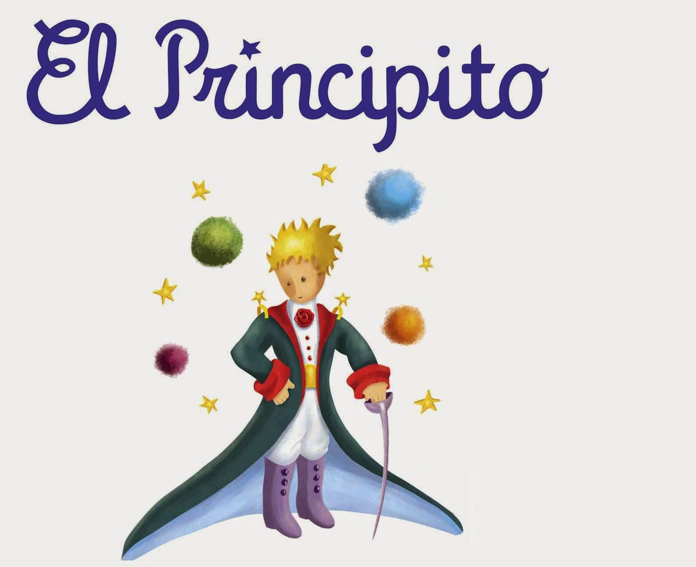

Muestra del libro "El principito"
La historia comienza con el aviador contando que, cuando era niño, dibujó una boa comiéndose un elefante, pero los adultos pensaban que había dibujado un sombrero. Cuando el aviador intentó corregirlos, los adultos le dijeron que dejase de dibujar y se dedicase a algo más productivo, algo que hace que el aviador se lamente de la falta de imaginación de los adultos.
De adulto, el aviador, que ahora es piloto, sufre un incidente cuando su avión se avería en el desierto del Sáhara, lejos de todo contacto humano. Mientras intenta arreglar su avión, aparece un niño que el aviador apoda como el principito. El niño le pide al aviador que le dibuje un cordero y este, en su lugar, le enseña su antiguo dibujo de la boa devorando al elefante. Para su sorpresa, el principito entiende el dibujo a la perfección y el aviador decide entonces dibujarle el cordero. Sin embargo, al verse incapaz de dibujarlo, dibuja en su lugar una caja y le dice al principito que el cordero está en el interior de la misma, que solo debe usar su imaginación, y el principito acepta el dibujo.
Los días pasan y el aviador sigue intentando reparar su avión, sin éxito. Mientras tanto, el principito le cuenta la historia de cómo llegó a la Tierra. Según cuenta, él procede de un pequeño planeta, el Asteroide B-612, que es poco más grande que una casa y tiene tres pequeños volcanes, uno de ellos inactivo, y gran variedad de plantas. Se pasa el día limpiando los volcanes y quitando algunas semillas de malas hierbas, como las semillas de los árboles baobabs.